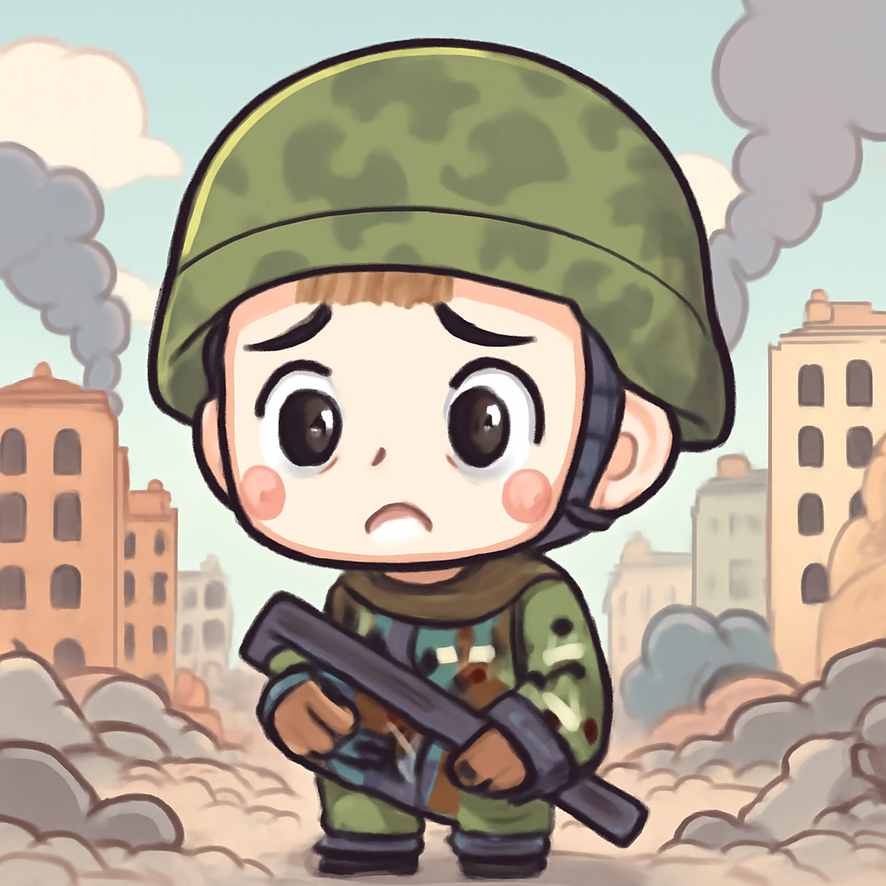
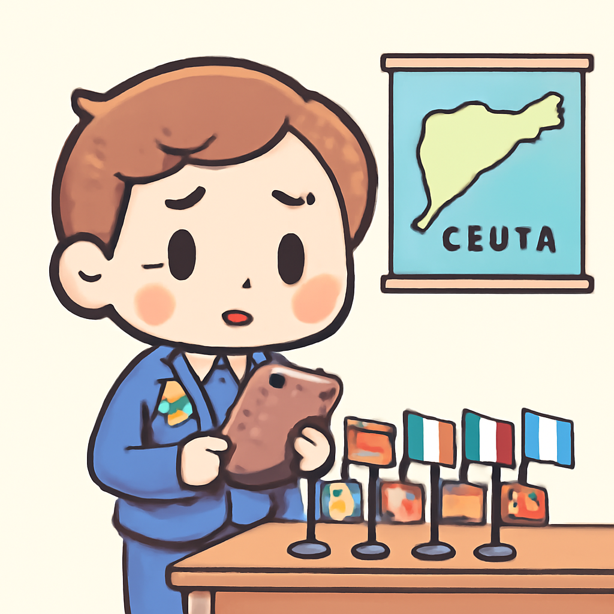
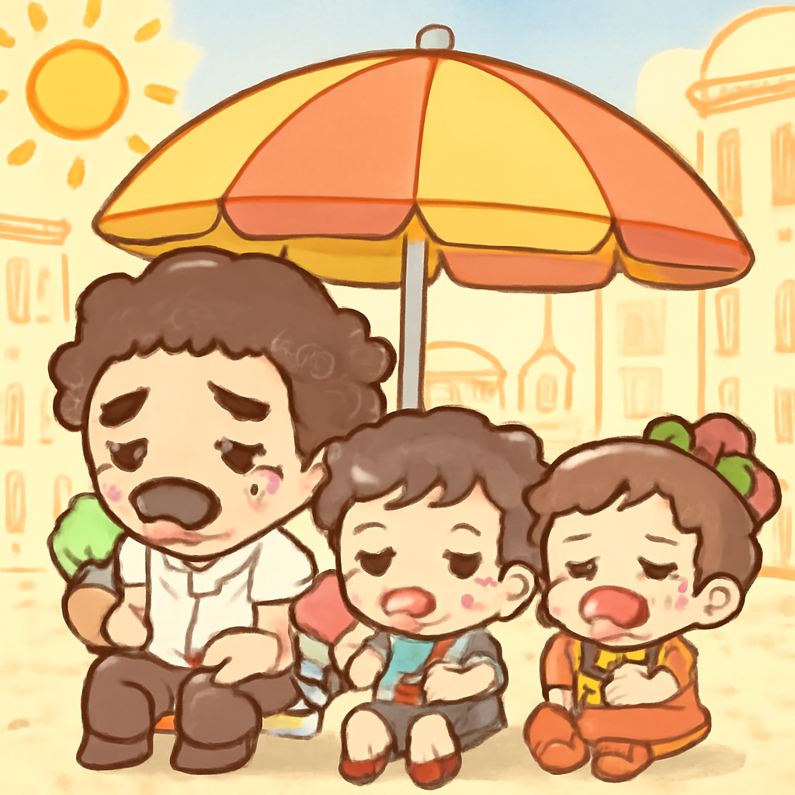

其一 · 以色列西岸 · 定居者襲擊巴勒斯坦人言辭引爭議
以色列西岸定居者稱襲擊巴勒斯坦人是報復行為。
在以色列西岸，一名定居者對媒體表示，襲擊巴勒斯坦人是正當的報復行為。這一言論引發了國際社會的廣泛關注，因為隨著定居點的擴張，暴力事件持續上升，對和平進程造成重大挑戰。希望他們能找出更好的溝通方式，而不是用拳頭來解決問題。
🔗 原始新聞 ↗
2026-08-02 · 以古觀今，以笑抗愁
以色列西岸定居者稱襲擊巴勒斯坦人是報復行為。
在以色列西岸，一名定居者對媒體表示，襲擊巴勒斯坦人是正當的報復行為。這一言論引發了國際社會的廣泛關注，因為隨著定居點的擴張，暴力事件持續上升，對和平進程造成重大挑戰。希望他們能找出更好的溝通方式，而不是用拳頭來解決問題。
🔗 原始新聞 ↗
俄羅斯導彈在基輔造成9人死亡，烏克蘭防空系統面臨挑戰。

俄羅斯軍隊的導彈襲擊在烏克蘭首都基輔造成9人死亡，這使得當地居民的恐懼再次升級。隨著烏克蘭的愛國者導彈防空系統庫存減少，局勢變得愈發緊張。希望能有和平的曙光，而不是不斷的導彈聲。
🔗 原始新聞 ↗
歐盟針對西班牙飛地塞烏塔的移民潮召開緊急會議。

歐盟於倫敦召開緊急會議，因西班牙塞烏塔的移民潮引發各國間的緊張關係。面對不斷增加的移民人數及悲劇的發生，歐盟必須尋求解決方案，以避免人道危機的惡化。希望有一天，我們能夠輕鬆地跨越邊界，而不是被困在海上。
🔗 原始新聞 ↗
意大利19個主要城市發出最高熱警報，民眾需注意防暑。

意大利的19座主要城市，包括羅馬和米蘭，正面臨最高熱警報，氣溫飆升至前所未有的高度。當地居民被建議多喝水，避免外出，否則可能變成“人肉燒烤”。希望這波熱浪快點過去，讓大家能恢復正常生活。
🔗 原始新聞 ↗
烏干達成功控制埃博拉疫情，最後一名患者已出院。
烏干達醫療系統在埃博拉疫情的抗爭中取得了顯著成果，最後一名患者已經出院，這無疑是一個振奮人心的消息。這場疫情讓人們更加重視公共衛生的重要性，未來要持續保持警惕。不過，大家現在可以放心地呼吸新鮮空氣了！
🔗 原始新聞 ↗